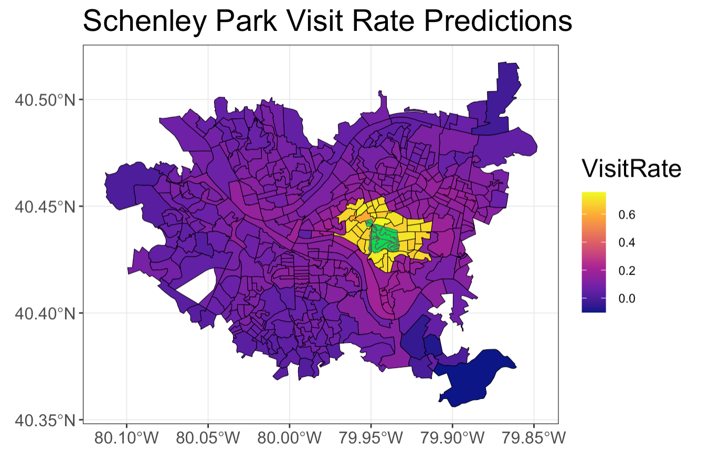
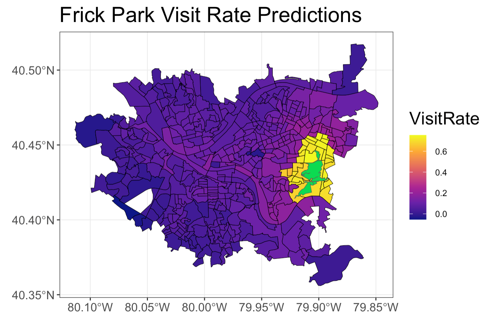

After Building Our Regression Models, We Could Use Them To Predict the Visit Rate of Schenley Park and Frick Park, the Two Regional Parks Not Included in Our Data.
Schenley Park

Frick Park

Because these parks are regional parks, the predictions were made based on a regression model that was created using only Highland Park, Emerald View Park, and Riverview Park. See below for a summary of that regression: